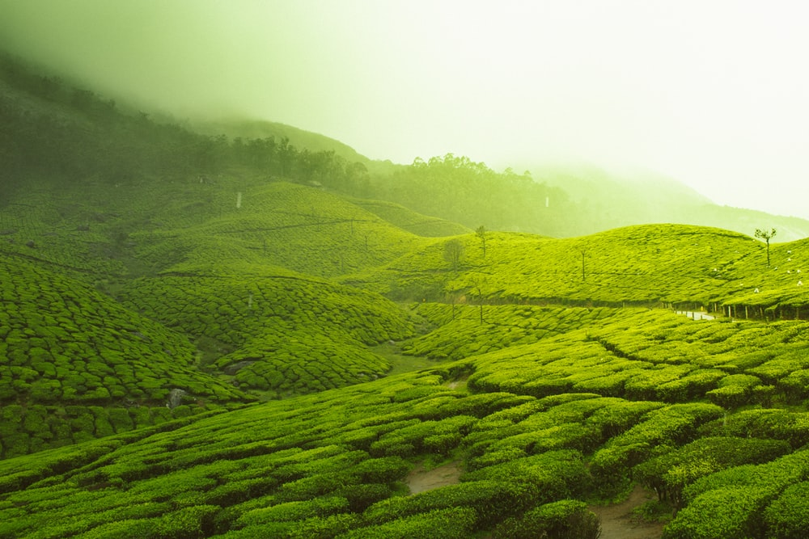

Districts of Kerala
-

Trivandrum
Called the ‘Evergreen city of India’, Thiruvananthapuram is the capital of the state of Kerala. The city comprises beautiful beaches, long stretches of palm fringed shorelines, windy backwaters and historical structures. Along with its natural and historical significance, the city is also popular for its ancient temples that are renowned for their architecture making Thiruvananthapuram one of the most visited pilgrim centers of India.
Explore More -
Kollam
Kollam attracts travelers all-round the year with its wide variety of sightseeing options that one must visit as part of Kollam tour packages. Kollam Beach, Thirumullavaram Beach, Thangasseri Beach, Munroe Island, Ashtamudi Lake, Sasthamkotta Lake, Alumkadavu Boat Building Yard, Rameshwara Temple, Achencoil, Amritapuri Ashram, Aryankavu, Chavara, Kottarakkara, Oachira, and Pullichira Church are the most famous
Explore More -
Alappuzha
Alappuzha, also known as Alleppey, is situated on the shores of the Arabian Sea close to the banks of Vembanad Lake. It is the administrative headquarters of the Alappuzha district and the 6th largest city in Kerala. Along with Kumarakom, Alappuzha is among the most famous destination of Kerala Backwaters. A houseboat cruise in these backwaters is a delightful experience. It connects Kumarakom and Cochin to the North and Kollam South.
Explore More -

Pathanamthitta
Pathanamthitta is close to the Western Ghats and is endowed with a scenic landscape comprising of low undulating hills, extensive stretches of lush forests, rivers, and charming countryside. Sabarimala is the famous pilgrim center situated in Pathanamthitta. Aranmula, the Kerala Institute of Folklore and Folk Arts at Mannadi, Konni elephant training camp, Pandalam, Perumthenaruvi Waterfall, and Maramon are other prominent
Explore More -

Kottayam
Kottayam is bounded by the Western Ghats on the east and the Vembanad Lake on the west. Kottayam is well known as a beautiful Kerala backwaters destination with stunning landscape and beauty. Kumarakom, the most famous backwater destination of Kerala is situated very close to Kottayam. It is also a gateway to the pilgrim centers of Sabarimala, Mannanam, Vaikom, Ettumanoor, Bharananganam, Erumeli, Manarcaud.
Explore More -

Idukki
Idukki has a mix of diverse attractions like wildlife sanctuaries, hill stations, spice plantation centers and mountain treks. Idukki Wildlife Sanctuary, Idukki Dam, Thommankuthu Waterfalls, Ramakalamedu, Kalvari Mount / Calvary Mount, Malankara Dam, and Ilaveezha Poonchira are some of the prominent places to visit in Idukki. Idukki district is also home to South India's highest peak, Anamudi (2695 meters), along with 13 other peaks.
Explore More -
Ernakulam
Boasting a white-sandy beach, captivating island, heritage museums, and so much more, Ernakulam encompasses an array of magnificent attractions. Visit this wondrous city in God’s own country – Kerala and have a wholesome excursion. But, before beginning your expedition make sure to check out these stunning places to visit in Ernakulam and remain spellbound.
Explore More -
Thrissur
The city of Thrissur is home to several atractions such as temples, churches, and wildlife sanctuaries. The Vadakkumnathan temple, Thiruvambadi Sri Krishna Temple, Paramekkavu temple, Guruvayur Temple, Our Lady of Lourdes Syro-Malabar Catholic Metropolitan Cathedral, Our Lady of Dolours Syro-Malabar Catholic Basilica, Athirapally Falls, Elephant Sanctuary near Guruvayur, Peechi Dam & Sanctuary, Chimmony Wildlife Sanctuary.
Explore More -

palakkad
Palakkad tour packages are a mix of waterfalls, dams and wildlife sanctuaries. Palakkad Fort, Jainmedu, Kalpathy, Malampuzha Dam and Gardens, Pothundi Dam, Meenkulathi Bhagavathi Temple, Pallassena and Dhoni Waterfalls are the famous places to visit in Palakkad. The district is gifted with the beauty of virgin and verdant Nelliampathy hills, Silent Valley National Park, Parambikulam Wildlife Sanctuary, Attappady hills and Mangalam, Kanjirapuzha.
Explore More -
Malappuram
Best of Malappuram tourist places include names of Kottakkunnu, Kadalundi Bird Sanctuary, Keralam Kundu Waterfalls, Nedumkayam, Arimbra Hills, Adyanpara Waterfalls, and many others to explore. There are a number of elements that make up the city of Malappuram a favorite among tourists.
Explore More -

Kozhikode
According to history, Kozhikode was under the Chera rulers until 1122 AD. The city of Calicut came into existence in the 13th century when the Ernad King Udaiyavar conquered the area around Ponniankar and built a fort at a place called Velapuram, now known as Calicut. The Europeans called him Zamorin. Interestingly, the name Calicut is derived from 'calico,'
Explore More -
Wayanad
Wayanad is mostly a forested region dotted with misty valleys, tumbling waterfalls, and spice plantations. For nature lovers, wildlife sanctuaries are the most popular attraction to explore in Wayanad. Banasura Dam, Edakkal Caves, Wayanad Sanctuary at Muthanga & Soochipara Falls are the top places to visit in Wayanad. Chembra Peak, situated in Wayanad is one of the top trekking places in Kerala.
Explore More -
Kannur
The northern coast of Kerala is way less touristy than its southern coast. This is an attraction in its every right. The major draw card of this end of the coastal Kerala is the underdeveloped but very beautiful beaches found here. Besides this the enthralling theyyam possession rituals conducted here are also equally magnificent.
Explore More -

Kasargod
A rare district in India housing seven languages and vivid appreciable cultures. Also, experience the Malabar coastal winds you have been reading about in Geography all this while. Get set to be awestruck and jaw dropped to find manmade and nature blend at its best at Kasaragod.
Explore More